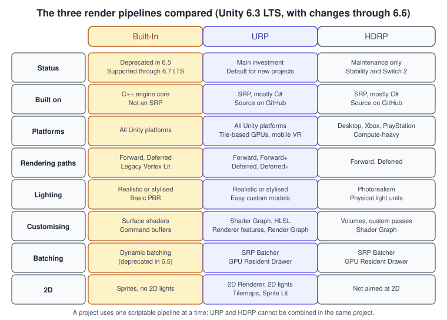
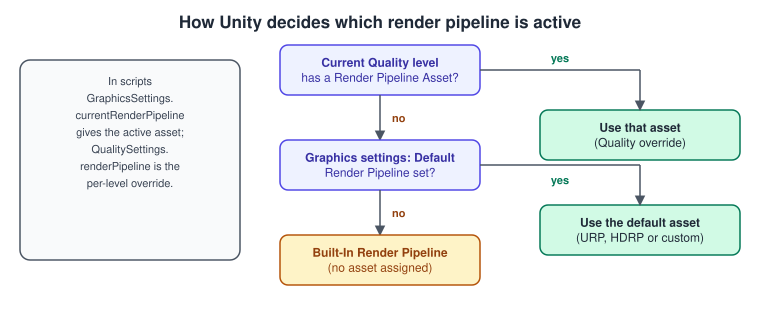
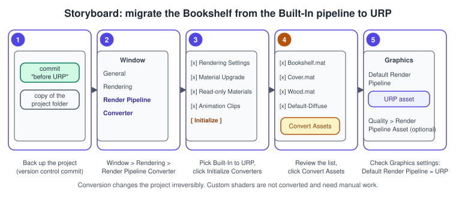
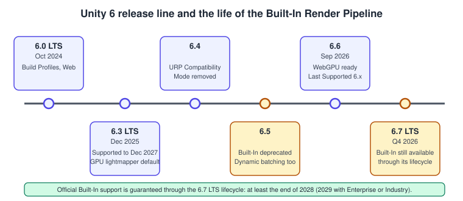

Render Pipelines Overview
|
This content was generated with the assistance of AI and should be verified against the official documentation before being relied on in production. |
Every frame, something has to decide which objects are visible, how they are lit and in what order they are drawn, and what happens to the picture before it reaches the screen. In Unity that something is the render pipeline. The choice of pipeline is the most consequential graphics decision of a project: it decides which shaders and materials work, which lighting features exist, which platforms are reachable and how the project can be extended. It is also the hardest decision to reverse, because a different pipeline uses different shaders and does not have the same features. Read this page before you create a project, and again before you migrate one.
The facts were checked in November 2026. The page documents Unity 6.3 LTS (6000.3, URP and HDRP package version 17.3) and follows the pipeline’s direction through 6.4, 6.5 and 6.6, including the deprecation of the Built-In Render Pipeline in 6.5. The Bookshelf project uses URP with the Universal 3D template and runs on desktop, mobile and the Web platform. The general theory of what a rendering pipeline does is in The Rendering Pipeline; this page is about how Unity packages it.
What a render pipeline does
A render pipeline takes the objects of a scene and displays them on screen, in three repeated steps.
-
Culling decides which objects to draw: it removes objects outside the camera’s view (frustum culling) or hidden behind others (occlusion culling).
-
Rendering draws the remaining objects, with the correct lighting, into pixel buffers.
-
Post-processing modifies the pixel buffers to produce the final frame: colour grading, bloom, depth of field and similar effects.
Unity ships three prebuilt pipelines and lets you write your own. The first two are built on the Scriptable Render Pipeline (SRP), a thin API layer that lets you schedule and configure rendering commands from C#; the third is the engine’s older native pipeline.
-
The Built-In Render Pipeline is a general-purpose pipeline with limited options for customisation. It is not based on SRP, but you can configure it by choosing among rendering paths and extend it with command buffers and callbacks.
-
The Universal Render Pipeline (URP) is an SRP made by Unity for scalable graphics across a wide range of platforms, from mobile to high-end consoles and PCs.
-
The High Definition Render Pipeline (HDRP) is an SRP for cutting-edge, high-fidelity graphics on high-end platforms.
How a pipeline is plugged in: asset and instance
Every SRP-based pipeline has two customised elements. The render pipeline asset is an asset in your project that stores which pipeline to use and how to configure it; its script derives from RenderPipelineAsset and overrides CreatePipeline. The render pipeline instance is the object that actually renders; it derives from RenderPipeline and overrides Render. Unity creates the instance from the asset. You can have several assets that use the same pipeline with different settings, for example one for low-end phones and one for desktops, and swap them at run time. If no asset is assigned anywhere, Unity uses the Built-In Render Pipeline.
Pipelines talk to the low-level graphics code through ScriptableRenderContext, the interface used to schedule and execute rendering commands. You rarely touch it unless you write a custom pipeline; in URP you extend rendering with renderer features and the Render Graph instead (see Render Graph and Custom Passes).
The three pipelines compared

The Built-In Render Pipeline
The Built-In Render Pipeline is Unity’s oldest pipeline and the one used by almost all tutorials written before 2020. It supports the Forward, Deferred and Legacy Vertex Lit rendering paths, surface shaders (a code-generation layer over HLSL), command buffers for custom rendering and callbacks such as OnPostRender. Its source is C++ and available only by buying source-code access.
Unity has started the formal deprecation of this pipeline. It was marked deprecated in Unity 6.5, which means that Unity strongly encourages URP for any new project. It remains available at least through the Unity 6.7 LTS lifecycle, so projects that ship it keep official support at least until the end of 2028 (2029 with Enterprise or Industry licences). No removal date has been set, but Unity states that it intends to remove it eventually and does not recommend it for new titles. Shader Graph receives only bug fixes for Built-In support.
The Universal Render Pipeline
URP is the pipeline for "almost anything": 2D and 3D, mobile and desktop, XR, the Web platform, consoles. Unity describes it as the pipeline behind the large majority of games released in the last three years, and as the pipeline where its engineering effort concentrates: faster performance and build times, stability, extensibility, and new lighting capabilities for dynamic and procedural worlds. Its source is mostly C# and public on GitHub. It focuses on efficiency on tile-based GPUs (most mobile devices and Apple silicon) and on untethered VR.
What URP gives you, by area:
-
Rendering paths: Forward, Forward+ (no per-object light limit), Deferred and Deferred+.
-
Lighting: a physically based Lit shader (basic PBR with some advanced features such as clear coat), Simple Lit and Baked Lit shaders for low-end hardware, baked and mixed lighting with adaptive probe volumes, real-time shadows (for one directional light at a time), light cookies and reflection probes.
-
Customisation: Shader Graph, hand-written HLSL, renderer features, custom post-processing through the Full Screen Pass renderer feature, and the Render Graph, which is mandatory for custom passes since the Compatibility Mode was removed in Unity 6.4.
-
Performance tools: the SRP Batcher, the GPU Resident Drawer (disabled by default), GPU occlusion culling, spatial-temporal post-processing (STP) upscaling, and Render Graph pass merging that is optimised for tile-based GPUs.
-
2D: the 2D Renderer, with 2D lights and shadows, sprite lit shaders and tilemaps.
The High Definition Render Pipeline
HDRP targets AAA-quality games, automotive demos, architectural applications and anything that needs high-fidelity graphics. It uses physically based lighting and materials with physical light units, supports forward and deferred rendering, and offers features that URP does not: ray tracing, a physically based sky, volumetric fog and clouds, screen-space global illumination, subsurface scattering, hair, fabric and water systems, and decal layers. It uses compute shader technology, so it needs compatible hardware and supports desktop, Xbox and PlayStation. It is not available on iOS, Android or the Web platform.
HDRP is feature-rich already, and Unity has put it into maintenance: no new features are planned. Work focuses on stability, regressions, critical issues and extending platform reach, with official HDRP support for Nintendo Switch 2 planned for Unity 6.5. A project can use URP or HDRP, but not both at once, because their rendering paths and light models differ. Details are in HDRP Overview.
Features that decide projects
The feature comparison reference lists hundreds of rows. These are the ones that most often decide a choice.
| Feature | Built-In | URP | HDRP |
|---|---|---|---|
Nintendo Switch, iOS, Android, Web |
Yes |
Yes |
No (Switch 2 support is announced for 6.5) |
WebGPU |
No |
Yes (experimental when the table was generated; production-ready in 6.6) |
No |
Surface shaders |
Yes |
No (use Shader Graph or HLSL) |
No |
Shader Graph |
Yes (bug fixes only) |
Yes |
Yes |
Custom post-processing |
Yes |
Yes (Full Screen Pass renderer feature) |
Yes |
Decals |
No (use a Projector) |
Yes (opaque objects only) |
Yes (opaque and transparent) |
Adaptive probe volumes |
No |
Yes |
Yes |
Real-time shadows for several directional lights |
Yes |
One at a time |
Yes |
Physical light units |
No |
No |
Yes |
Screen-space reflections |
Yes |
No |
Yes |
Ray tracing |
No |
No |
Yes |
SRP Batcher |
No |
Yes |
Yes |
GPU Resident Drawer |
No |
Yes (off by default) |
Yes (on by default) |
Render Graph |
No |
Yes |
Yes |
2D Renderer, 2D lights |
No |
Yes |
No |
|
Yes |
No |
No |
The comparison page is generated from a spreadsheet maintained by Unity’s graphics documentation team, and the copy shipped with the 6.3 manual carries the data of an earlier release. The URP direction announced for 2026 includes screen-space reflections, real-time global illumination, physical light units and exposure control, so check the current manual before ruling a feature out.
Rendering paths
A rendering path is the series of operations that draws and lights the objects the camera sees. Different paths have different capabilities and costs.
-
Forward: Unity lights each object in turn. It is the default. Lighting has limits that differ by pipeline; in URP there is a main directional light plus a limited number of additional lights per object.
-
Forward+ (URP): like Forward, but with no limit on the number of lights per object, because lights are assigned to screen tiles or clusters instead of to objects.
-
Deferred: Unity first writes a geometry buffer (G-buffer), a set of textures that store geometry and material data, then lights all objects at once from that data. There are fewer lighting limits, so normal maps and cookies work with all lights. Deferred cannot render transparent objects, so Unity renders those afterwards in a forward pass. URP also has Deferred+.
-
Legacy Vertex Lit (Built-In only): a subset of Forward that lights per vertex.
For the theory behind forward and deferred shading see Lighting and Shading Models; URP’s rendering paths are covered in URP in Depth. MSAA works with the Forward path only, in all three pipelines.
Choosing a pipeline
Some rules that sit behind the tree:
-
Default to URP. It is where new features go, where Asset Store content is converging (Unity wants Asset Store content to work with URP out of the box), and the only pipeline that covers every platform with one set of materials.
-
Pick HDRP only for a reason. The reasons are features URP does not have (ray tracing, volumetric clouds, water, strand hair, subsurface scattering) on desktop and PlayStation or Xbox hardware, and a team that accepts the pipeline in maintenance mode.
-
Pick Built-In only to keep a live game. Do not start a project on it.
-
Decide early. Materials, shaders, lighting setups and post-processing all differ. A switch late in production is possible but expensive.
-
Test on the weakest target. A pipeline that looks right on the developer’s workstation can miss its frame budget on a three-year-old phone; see Profiling and Optimization.
For the Bookshelf the choice is simple: it runs on desktop, mobile and the Web platform and uses a stylised look, so the project is URP from the first commit.
Creating a project and finding the active pipeline
New projects choose a pipeline through the template. In Unity Hub, create a new project from the Universal 3D template (URP) for the Bookshelf; a Built-In project comes from a Built-In template, and an HDRP project from the HDRP template. The template creates the render pipeline asset (and for URP a Universal Renderer asset) and assigns it, which is exactly what makes the project use that pipeline. The Hub workflow is described in Getting Started: Hub and Editor.
How Unity picks the active pipeline
Two settings determine the active pipeline. For the current quality level, Unity uses the asset assigned to Render Pipeline Asset in the Quality settings. If that field is empty, it uses the asset assigned to Default Render Pipeline in the Graphics settings. If both are empty, it uses the Built-In Render Pipeline.

This is the mechanism that makes quality tiers possible: a Low level can point to a URP asset with no additional lights and no soft shadows, and High to one with Forward+ and 4x MSAA, and a settings menu simply changes the quality level.
Detecting the pipeline from C#
Code that has to behave differently per pipeline, or that wants to fail loudly when the project is configured wrongly, can ask the engine. GraphicsSettings.currentRenderPipeline returns the active asset (or null for the Built-In pipeline), RenderPipelineManager.currentPipeline returns the instance (available only after one frame has been rendered), and the activeRenderPipelineTypeChanged event fires when the type changes.
using UnityEngine;
using UnityEngine.Rendering;
/// <summary>
/// Logs which render pipeline is active and warns when it is not the one the Bookshelf expects.
/// </summary>
public class PipelineReport : MonoBehaviour
{
[SerializeField] bool expectScriptablePipeline = true;
void OnEnable()
{
RenderPipelineManager.activeRenderPipelineTypeChanged += Report;
}
void OnDisable()
{
RenderPipelineManager.activeRenderPipelineTypeChanged -= Report;
}
void Start()
{
Report();
}
void Report()
{
RenderPipelineAsset active = GraphicsSettings.currentRenderPipeline;
if (active == null)
{
Debug.Log("Active pipeline: Built-In Render Pipeline (no render pipeline asset assigned)");
if (expectScriptablePipeline)
{
Debug.LogWarning("The Bookshelf expects URP: assign a pipeline asset in Project Settings > Graphics.");
}
return;
}
Debug.Log($"Active pipeline asset: {active.name} ({active.GetType().Name})");
}
}Switching assets at run time
Assigning QualitySettings.renderPipeline overrides the asset of the current quality level. Unity applies the change at once, so the next frame uses the new asset; make sure everything in the scene is compatible with it, because shaders and materials that work with one pipeline can be pink with another.
using UnityEngine;
using UnityEngine.Rendering;
/// <summary>
/// Lets a settings screen choose between a light URP asset for weak devices and a full one.
/// </summary>
public class PipelineQualitySwitcher : MonoBehaviour
{
[SerializeField] RenderPipelineAsset lightAsset;
[SerializeField] RenderPipelineAsset fullAsset;
public void Apply(bool useFullQuality)
{
RenderPipelineAsset chosen = useFullQuality ? fullAsset : lightAsset;
if (chosen == null)
{
Debug.LogWarning("Assign both pipeline assets in the Inspector.");
return;
}
QualitySettings.renderPipeline = chosen;
}
}Migrating from the Built-In pipeline to URP
Unity provides the Render Pipeline Converter, which converts assets made for a Built-In project into assets that URP can use. It is a one-way, irreversible operation, so commit the project (or copy it) first.

Procedure
-
Back up the project with version control or a copy. The conversion makes irreversible changes.
-
Install the Universal Render Pipeline package from the Package Manager if the project does not already have it, then create a URP asset and a Universal Renderer asset, or let the converter create them in the next steps.
-
Open Window > Rendering > Render Pipeline Converter.
-
Choose the conversion type Built-In Render Pipeline to URP and keep the converters you need selected: Rendering Settings (creates the URP and Universal Renderer assets and converts the settings), Material Upgrade (converts prebuilt Built-In materials to URP materials), Read-only Material Converter (converts default materials outside the Assets folder such as Default-Diffuse), Animation Clip Converter (fixes clips that animate material properties) and, if the Post-Processing Stack v2 is installed, Post-Processing Stack v2 Converter.
-
Click Initialize Converters. The tool scans the project and lists the elements that it will convert; clear the check boxes of anything to exclude. A yellow icon next to an element means user action may be needed.
-
Click Convert Assets. When the converters finish, each shows its status.
-
Confirm in Edit > Project Settings > Graphics that Default Render Pipeline is the new URP asset, and in the Quality settings that each level has the asset you want.
-
Fix what the converter cannot: custom shaders, scripts that use Built-In-only callbacks, and lighting that needs rebaking (see below).
What the converter does not do
-
Custom shaders. The Material Upgrade converter does not support materials with custom shaders. Surface shaders are not supported by URP at all; rewrite them as Shader Graph graphs or HLSL shaders for URP. Unity documents both approaches.
-
Quality settings. Many settings moved from the Quality window to the URP asset. Unity publishes starting values that match the Built-In Low and High quality levels approximately, and a table of where each setting lives in URP.
-
Light falloff. URP uses a quadratic falloff, which has a very similar look to the Built-In function but is not identical; lights may need an intensity or range tweak.
-
Post-processing. The Post-Processing Stack v2 is replaced by Volumes with URP overrides; the converter handles the common cases.
-
Camera code. Code that uses
OnPostRender(not supported in URP) or old command-buffer events needs to move to renderer features and the Render Graph.
An audit script for leftover Built-In shaders
After a conversion, any material that still uses a Built-In shader shows as pink in a URP project. This Editor script lists them so you do not have to find them by eye. It must live in a folder named Editor, because it uses UnityEditor.
// Assets/Editor/MaterialPipelineAudit.cs
using UnityEditor;
using UnityEngine;
/// <summary>
/// Lists the materials in the project that still use Built-In Render Pipeline shaders.
/// </summary>
public static class MaterialPipelineAudit
{
[MenuItem("Bookshelf/Audit Materials for URP")]
static void Audit()
{
string[] guids = AssetDatabase.FindAssets("t:Material");
int count = 0;
foreach (string guid in guids)
{
string path = AssetDatabase.GUIDToAssetPath(guid);
var material = AssetDatabase.LoadAssetAtPath<Material>(path);
if (material == null || material.shader == null)
{
continue;
}
string shaderName = material.shader.name;
bool builtIn = shaderName == "Standard"
|| shaderName.StartsWith("Legacy Shaders/")
|| shaderName.StartsWith("Mobile/")
|| shaderName == "Hidden/InternalErrorShader";
if (builtIn)
{
Debug.LogWarning($"{path} uses '{shaderName}'", material);
count++;
}
}
Debug.Log($"Material audit finished: {count} of {guids.Length} materials need attention.");
}
}After the conversion: lighting
Lighting data baked under one pipeline should be rebaked under another, and the settings differ: URP offers adaptive probe volumes, uses the GPU lightmapper by default since 6.3 and supports only one shadow-casting directional light at a time. The lighting model is explained in Materials, Textures and Lighting and the general principles in Shadows and Global Illumination.
Where the pipelines are going

Unity published its render pipeline strategy for 2026 with three points. First, advance URP: more performance, shorter builds, better extensibility and visual capabilities for dynamic worlds (physical light units, pre- and auto-exposure, a physical sky, real-time global illumination, screen-space reflections and on-tile post-processing for mobile). Second, maintain HDRP, concentrating on stability and Nintendo Switch 2 support. Third, deprecate the Built-In pipeline, starting in 6.5. Combined with the Render Graph becoming mandatory for custom passes in URP (the Compatibility Mode was fully removed in 6.4), the practical result is that the pipeline you learn and the pipeline Unity maintains the longest are the same one: URP.
Unity 6.3 LTS is supported until December 2027 and Unity 6.0 LTS through October 2026. Unity 6.7 LTS is due at the end of 2026 and is the version that carries the Built-In pipeline for its support period.
Common mistakes
-
Starting a new project on the Built-In pipeline because the tutorial you follow does. It is deprecated; follow the URP version of the tutorial or translate it.
-
Pink materials after a switch. The material’s shader belongs to a different pipeline. Run the Render Pipeline Converter or the audit above, and rewrite custom shaders.
-
A missing Default Render Pipeline asset. Project Settings > Graphics and the Quality levels both empty means the Built-In pipeline, even in a URP template that someone modified.
-
Using URP and HDRP in the same project. They cannot be used at the same time, because their rendering paths and light models differ: pick one SRP per project.
-
Expecting
OnPostRenderor surface shaders in URP. They belong to Built-In. Use renderer features and Shader Graph. -
Judging performance in the Editor on a workstation. Profile on the target device; URP’s tile-based optimisations are only visible there.
-
Using MSAA with Deferred. MSAA is supported with the Forward path only; with Deferred use an alternative anti-aliasing method (FXAA, SMAA or TAA).
-
Changing a pipeline asset at run time and forgetting dependent assets. Cameras, volumes and materials may need matching components.
Performance notes
-
Keep pipeline assets lean per tier: disable Opaque Texture and Depth Texture when no effect needs them, limit additional lights and shadow resolution on low tiers, and use lower render scales on mobile.
-
Prefer the SRP Batcher-compatible shaders (URP Lit and Shader Graph shaders qualify) and keep material counts low; see Profiling and Optimization.
-
On tile-based GPUs, keep the number of full-screen passes small. URP’s Render Graph merges compatible passes so intermediate data stays in tile memory; each extra custom blit reduces that benefit.
-
Choose the rendering path by the lighting load: Forward for few lights and low bandwidth, Forward+ for many lights without a G-buffer, Deferred for many lights on hardware with bandwidth to spare.
-
Dynamic batching is deprecated (6.5); rely on the SRP Batcher and the GPU Resident Drawer instead.
What changed recently
| Version | Date | Change |
|---|---|---|
Unity 6.0 LTS |
October 2024 |
URP 17 and HDRP 17 ship with the Render Graph; Build Profiles replace Build Settings. |
Unity 6.3 LTS |
December 2025 |
Released with URP and HDRP 17.3 and the GPU lightmapper as the default. |
Unity 6.4 |
2026 |
URP Compatibility Mode removed completely for custom render passes; the Render Pipeline Converter UI is redesigned. |
Unity 6.5 |
2026 |
The Built-In Render Pipeline is deprecated (supported through the 6.7 LTS lifecycle); dynamic batching is deprecated; the Render Pipeline Converter can convert shaders to HDRP. |
Unity 6.6 |
September 2026 |
WebGPU is production-ready on the Web platform; the CPU lightmapper is deprecated; the latest Supported release of the Unity 6 family. |
Unity 6.7 LTS |
End of 2026 (planned) |
The next LTS release; the Built-In pipeline remains available through its support period. |
Where the books are outdated
Both reference books target Unity versions that predate the SRP-based direction, so everything that depends on the pipeline needs translation. Only Unity in Action (UIA, 3rd edition) covers it, in chapters 4 and 10; Game Development Patterns with Unity 2021 does not.
| In the book | Today |
|---|---|
UIA ch. 4 and 10: the Standard shader and the Built-In Render Pipeline as the default for materials and lighting. |
The Standard shader belongs to the Built-In pipeline, which is deprecated since Unity 6.5. New projects use URP and the URP Lit shader or Shader Graph. |
UIA ch. 4 and 10: the Lighting window with Auto Generate lightmapping. |
Auto Generate was removed in Unity 6.0; lighting is generated explicitly, with the GPU lightmapper as the default since 6.3 and the CPU lightmapper deprecated in 6.6. |
UIA ch. 4 and 10: Built-In post-processing and camera effects. |
Use Volumes and URP overrides, and renderer features for custom effects. |
Both books: no Render Graph. |
Custom passes in URP are written with the Render Graph, and the Compatibility Mode was removed in Unity 6.4. |
See also
-
The Rendering Pipeline: the stages every pipeline implements, in general terms.
-
Lighting and Shading Models: PBR, forward and deferred shading.
-
Shadows and Global Illumination: shadow maps and baked lighting.
-
Performance and Profiling: finding the bottleneck.
-
URP in Depth: the asset, the renderer, rendering paths and quality tiers.
-
Render Graph and Custom Passes: writing custom passes for URP.
-
Materials, Textures and Lighting: the Lit material and lighting setups.
-
Shader Graph and HLSL: shaders that work in URP.
-
HDRP Overview: when HDRP still fits.
-
Build Profiles and Platforms: per-platform quality assets.